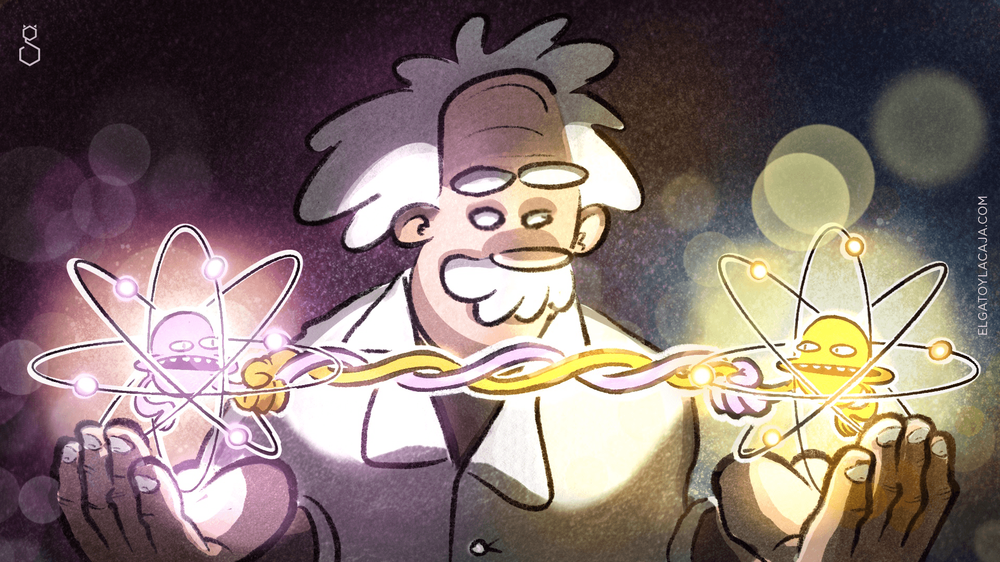
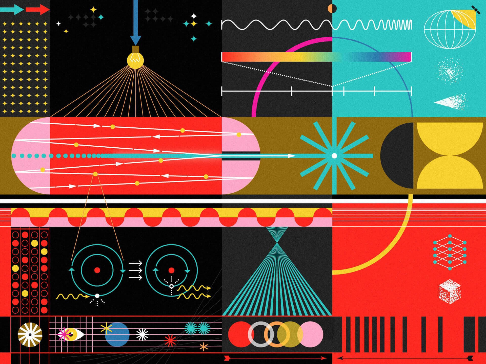
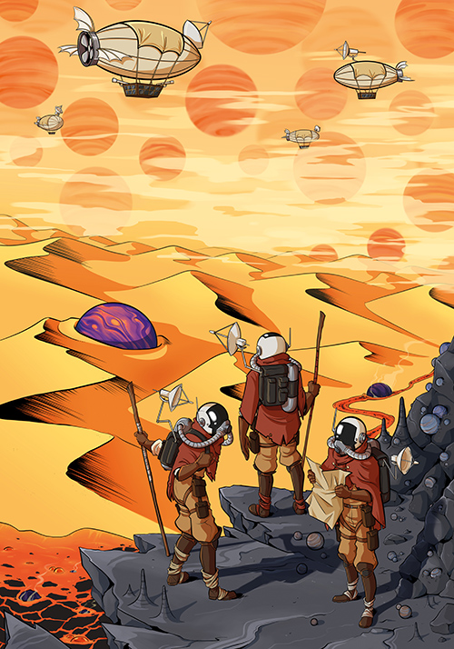
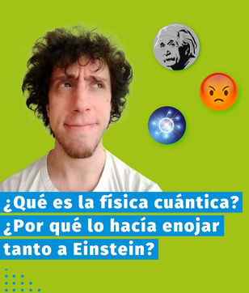
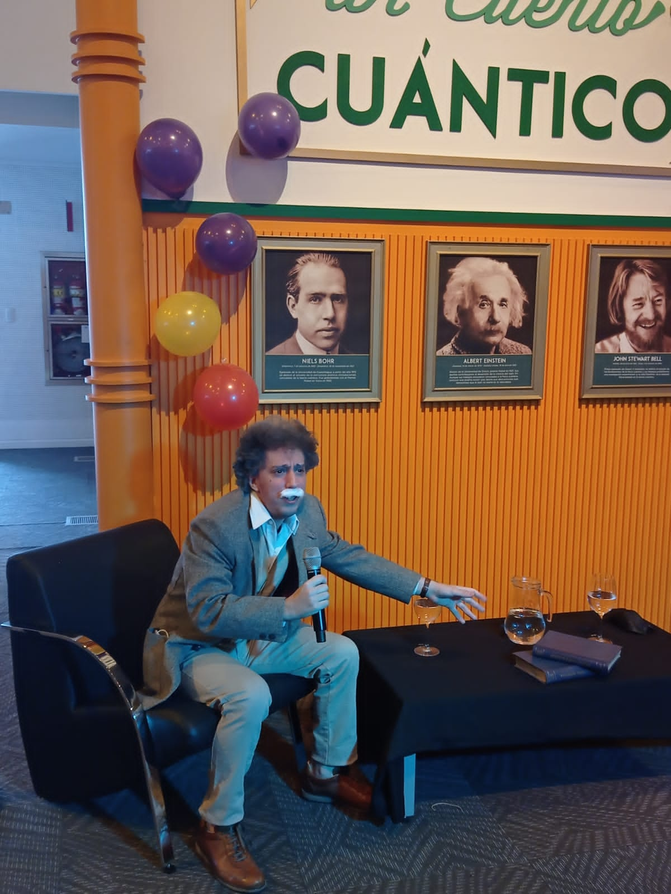

2024
TOI-2374 b and TOI-3071 b: two metal-rich sub-Saturns well within the Neptunian desert
Monthly Notices of the Royal Astronomical Society, 532(2), 1612–1634
PhD Student in Astrophysics Doctorando en Astrofísica
Instituto de Ciencias Físicas (ICIFI) · UNSAM · CONICET
Exoplanet characterization · Neptunian Desert · Bayesian statistics Caracterización de exoplanetas · Desierto de Neptunos · Estadística bayesiana
I am a PhD student at the Instituto de Ciencias Físicas (ICIFI) at Universidad Nacional de San Martín (UNSAM), in the International Center for Advanced Studies (ICAS), working under the supervision of Dr. Rodrigo F. Díaz and funded by a CONICET doctoral fellowship. My research focuses on the detection and physical characterization of exoplanets — planets orbiting stars beyond our Solar System. I combine space-based transit photometry with high-precision ground-based radial velocity spectroscopy to measure planetary masses, radii, and bulk densities, constraining their internal compositions and evolutionary histories. Throughout my work I rely on a solid foundation of Bayesian statistics to model signals, compare competing models, and infer physical parameters from complex spectroscopic datasets.
Soy estudiante de doctorado en el Instituto de Ciencias Físicas (ICIFI) de la Universidad Nacional de San Martín (UNSAM), en el International Center for Advanced Studies (ICAS), bajo la supervisión del Dr. Rodrigo F. Díaz, con financiamiento de una beca doctoral CONICET. Mi investigación se enfoca en la detección y caracterización física de exoplanetas — planetas orbitando estrellas fuera de nuestro Sistema Solar. Combino fotometría de tránsito con espectroscopía de velocidad radial de alta precisión para medir masas, radios y densidades planetarias, lo que permite inferir su composición interna e historia evolutiva. A lo largo de mi trabajo me apoyo en una sólida base de estadística bayesiana para modelar señales, comparar modelos y realizar inferencia de parámetros a partir de datos espectroscópicos complejos.
My work sits at the intersection of observational astronomy and statistical data analysis.
Mi trabajo se sitúa en la intersección de la astronomía observacional y el análisis estadístico de datos.
I analyze radial velocities — derived from Doppler shifts of stellar spectra recorded by high-resolution spectrographs — to measure precise exoplanet masses. Combined with photometric light curve observations, which yield planetary radii, these constrain bulk densities and internal compositions. My analyses have involved spectra from HARPS (ESO/La Silla), ESPRESSO (VLT/Paranal), and PFS (Magellan/Las Campanas).
Analizo velocidades radiales — derivadas de corrimientos Doppler de espectros estelares registrados por espectrógrafos de alta resolución — para medir masas precisas de exoplanetas. Combinadas con observaciones fotométricas de curvas de luz, que proporcionan los radios planetarios, estas restringen las densidades y las composiciones internas. Mis análisis han involucrado espectros de HARPS (ESO/La Silla), ESPRESSO (VLT/Paranal) y PFS (Magellan/Las Campanas).
A striking scarcity of Neptune-sized planets at short orbital periods. As part of the NOMADS programme, I led the study with which we discovered and characterized two new planets within this desert — TOI-2374 b and TOI-3071 b — combining TESS and ground-based transit photometry with HARPS radial velocities to measure their masses, radii, and bulk densities. I am currently participating in the ATREIDES programme (VLT/ESPRESSO) to measure their spin-orbit angles through the Rossiter-McLaughlin effect.
Una notable escasez de planetas de tamaño neptuniano en períodos orbitales cortos. En el marco del programa NOMADS, lideré el estudio con el que descubrimos y caracterizamos dos nuevos planetas dentro de este desierto — TOI-2374 b y TOI-3071 b — combinando fotometría de tránsito de TESS y de telescopios terrestres con velocidades radiales de HARPS para medir sus masas, radios y densidades. Actualmente participo en el programa ATREIDES (VLT/ESPRESSO) para medir sus ángulos espín-órbita a través del efecto Rossiter-McLaughlin.
I apply Bayesian inference to jointly model planetary signals and correlated stellar noise — represented through Gaussian processes (GPs) or other noise prescriptions depending on the dataset. This includes constructing competing RV models that differ in noise structure and orbital characteristics, comparing them via marginal likelihoods (Bayesian evidence), and sampling parameter posteriors with MCMC.
Aplico inferencia bayesiana para modelar conjuntamente señales planetarias y ruido estelar correlacionado — representado mediante procesos gaussianos (GPs) u otras prescripciones de ruido según el conjunto de datos. Esto incluye construir modelos de VR competidores que difieren en su estructura de ruido y características orbitales, compararlos mediante verosimilitudes marginales (evidencia bayesiana) y muestrear las distribuciones posteriores de los parámetros con MCMC.
arXiv author page ↗ Página de autor en arXiv ↗ ORCID ↗
Monthly Notices of the Royal Astronomical Society, 532(2), 1612–1634
Astronomy & Astrophysics
Monthly Notices of the Royal Astronomical Society, 539(4), 3138–3156
Tesis de Licenciatura en Ciencias Físicas, Facultad de Ciencias Exactas y Naturales, Universidad de Buenos Aires (UBA), Agosto 2022
"TOI-2374 b and TOI-3071 b: two metal-rich sub-Saturns well within the Neptunian desert"
66th Annual Meeting of the Asociación Argentina de Astronomía · La Plata, Argentina 66ª Reunión Anual de la Asociación Argentina de Astronomía · La Plata, Argentina
"TOI-2374 b and TOI-3071 b: two metal-rich sub-Saturns well within the Neptunian desert"
The Fate of Neptunian Worlds: exploring demographics, atmospheres and evolution · University of Warwick, Coventry, UK The Fate of Neptunian Worlds: exploring demographics, atmospheres and evolution · Universidad de Warwick, Coventry, UK
"Weighing the mass of LHS 3844 b"
Astronomy Group Seminar · University of Warwick, Coventry, UK Seminario del Grupo de Astronomía · Universidad de Warwick, Coventry, UK

Cómo la física cuántica desafió el sentido común, desde sus orígenes históricos hasta los debates que transformaron nuestra comprensión del universo.
Ver
¿La física cuántica es una teoría completa? ¿Existe una realidad objetiva independiente del observador?
Leer
¿Cómo se hace un láser y para qué sirve? ¿Son posibles los sables láser de Star Wars?
Leer
¿Cómo se ve a gran escala la gran familia de planetas de nuestra galaxia? (p. 35)
Leer
¿Cómo se ve a gran escala la gran familia de planetas de nuestra galaxia? (p. 6)
Leer
¿Por qué la hacía enojar tanto a Einstein?
Ver
Entrevista con Albert Einstein en su cumpleaños
Ver
Modelos de velocidad radial para la detección de planetas extrasolares de baja masa
Ver
Capítulo de la serie documental sobre exoplanetas (redacté el contenido para el guión)
Ver
Entrevista sobre exoplanetas y física cuántica en el programa El Giow en el canal de streaming Gelatina
Ver
Entrevista sobre exoplanetas en el programa Ayudame Loco en la Radio Nacional Rock FM 93.7
Ver
Entrevista sobre exoplanetas en el programa Podría ser peor en Radio Con Vos 89.9
VerVideo de difusión contando a la comunidad sobre nuestro trabajo en el grupo de exoplanetas
VerI'm happy to discuss research collaborations, outreach opportunities, or questions about my work.
Estoy disponible para discutir colaboraciones científicas, actividades de divulgación o consultas sobre mi trabajo.
Buenos Aires, Argentina